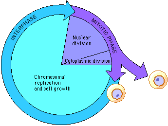

Though we frequently use the term mitosis to refer to the overall process of cell division, mitosis is actually only one phase of the cell cycle. The cell cycle is the orderly sequence of events that occurs from the time a cell divides to form two daughter cells to the time those daughter cells divide again. The phases of the cell cycle occur in meiosis as well as mitosis; you will see later how they differ.
The length of time of the cell cycle varies among organisms and among cell types. Later in this laboratory you will calculate the length of time a cell spends in several phases of the cell cycle.
Select each phase for a closer look.

 Continue to Design of the Experiment I.
Continue to Design of the Experiment I.